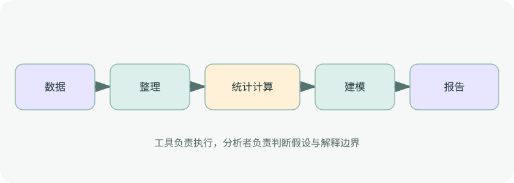

工具能让统计分析更快，但不会替你判断数据类型、研究设计或模型假设。可靠工作流要把数据处理、统计计算、模型诊断和报告记录连接起来。

23.1 Python vs R：世纪之争
每个刚入行的数据分析师都会面临这个灵魂拷问："我应该学 Python 还是 R？" 答案其实很简单——看你的战场在哪里。R 语言诞生于统计学家之手，天生就是做统计分析和可视化的，它的 tidyverse 生态让数据清洗和探索变得浑然天成。Python 则是通用编程语言，凭借 scipy.stats、statsmodels 和 scikit-learn 在机器学习与工程落地上占据绝对优势。
我的建议是：不必二选一，而是两个都要懂。你日常的主力可以是一个，但理解另一个的生态会让你在跨团队协作时游刃有余。下面这张对比表可以帮你快速定位：
| 任务 | Python 包 | R 包 |
|---|---|---|
| 描述统计 | scipy.stats, pandas | psych, summarytools |
| 假设检验 | scipy.stats (ttest, mannwhitney) | stats (t.test, wilcox.test) |
| 线性回归 | statsmodels (ols) | lm (基础包) |
| 逻辑回归 | statsmodels (logit) | glm (binomial family) |
| 方差分析 | statsmodels (anova_lm) | aov, car |
| 时间序列 | statsmodels.tsa | forecast, tsibble |
| 数据清洗 | pandas | dplyr, tidyr |
| 可视化 | matplotlib, seaborn | ggplot2 |
| 可重复报告 | Jupyter Notebook | R Markdown / Quarto |
| 贝叶斯分析 | PyMC | brms, rstan |
rpy2 包就可以实现，完全不需要在两种语言之间痛苦地切换。
23.2 Python 统计核心：scipy.stats 实战
scipy.stats 是 Python 生态中最基础的统计库，它涵盖了几乎所有常见的概率分布和假设检验方法。让我们通过一个实际例子来感受它的用法。假设我们有两组用户的点击率数据，想要检验它们是否存在显著差异：
import numpy as np
import scipy.stats as stats
# 模拟两组用户的点击率数据（单位：百分比）
np.random.seed(42)
group_a = np.random.normal(loc=5.2, scale=1.5, size=200) # 对照组
group_b = np.random.normal(loc=6.8, scale=1.7, size=180) # 实验组
# 1. 描述统计
print("A组: mean={:.3f}, std={:.3f}, n={}".format(
group_a.mean(), group_a.std(ddof=1), len(group_a)))
print("B组: mean={:.3f}, std={:.3f}, n={}".format(
group_b.mean(), group_b.std(ddof=1), len(group_b)))
# 2. 正态性检验（Shapiro-Wilk）
shap_a = stats.shapiro(group_a)
shap_b = stats.shapiro(group_b)
print(f"A组正态性 p={shap_a.pvalue:.4f}, B组正态性 p={shap_b.pvalue:.4f}")
# 3. 方差齐性检验（Levene）
levene = stats.levene(group_a, group_b)
print(f"方差齐性 p={levene.pvalue:.4f}")
# 4. 独立样本 t 检验（双尾）
t_stat, p_val = stats.ttest_ind(group_a, group_b, equal_var=True)
print(f"t检验: t={t_stat:.4f}, p={p_val:.6f}")
# 5. 如果正态性不满足，使用 Mann-Whitney U 检验
u_stat, u_pval = stats.mannwhitneyu(group_a, group_b, alternative='two-sided')
print(f"Mann-Whitney U: U={u_stat:.1f}, p={u_pval:.6f}")
# 6. 效应量（Cohen's d）
pooled_std = np.sqrt(((len(group_a)-1)*group_a.std(ddof=1)**2 +
(len(group_b)-1)*group_b.std(ddof=1)**2) /
(len(group_a)+len(group_b)-2))
cohens_d = (group_b.mean() - group_a.mean()) / pooled_std
print(f"Cohen's d = {cohens_d:.3f}")这段代码展现了一个标准的假设检验流程：先做描述统计，再检查数据前提条件（正态性和方差齐性），然后选择合适的检验方法，最后计算效应量。每一步都是我们在前几章中学过的知识，现在都用代码串起来了。
23.3 statsmodels：公式接口让回归更优雅
statsmodels 是 Python 中最接近 R 风格的统计建模库。它最大的亮点是提供了类似 R 的公式 API（formula API），让你可以用 y ~ x1 + x2 这样的语法来定义模型。这对于习惯 R 的用户来说简直是福音。
import pandas as pd
import statsmodels.api as sm
import statsmodels.formula.api as smf
from statsmodels.stats.anova import anova_lm
from sklearn.datasets import make_regression
# 生成模拟数据
np.random.seed(123)
n = 500
X = np.random.RandomState(42).randn(n, 3)
beta = np.array([2.5, -1.3, 0.8])
y = 5.0 + X @ beta + np.random.randn(n) * 1.2
df = pd.DataFrame(X, columns=['age', 'income', 'education'])
df['target'] = y
# 使用 statsmodels 公式 API 拟合多元线性回归
model = smf.ols('target ~ age + income + education', data=df)
result = model.fit()
print(result.summary())
# 方差分析表
anova_table = anova_lm(result)
print("\nANOVA 分解：")
print(anova_table)
# 预测与残差诊断
df['pred'] = result.fittedvalues
df['resid'] = result.resid
# Durbin-Watson 检验（残差自相关）
dw = sm.stats.durbin_watson(df['resid'])
print(f"\nDurbin-Watson 统计量: {dw:.4f}")
# Breusch-Pagan 异方差检验
bp_test = sm.stats.het_breuschpagan(df['resid'], result.model.exog)
print(f"Breusch-Pagan 异方差检验 p={bp_test[1]:.4f}")result.summary() 输出的表格几乎是论文级的——它一次性报告了回归系数、标准误、t值、p值、置信区间、R-squared、F检验和多种信息准则。相比 scikit-learn，statsmodels 更关注统计推断而非纯预测，是统计建模的首选。
23.4 环境搭建与工作流管理
一个好的工具链不仅包括分析库，还包括项目管理和环境管理工具。以下是我推荐的标准工作流：
# ---- 推荐的环境管理方案 ----
# 方案 A：conda（适合数据科学全栈）
conda create -n stat-analysis python=3.10
conda activate stat-analysis
conda install numpy pandas scipy statsmodels matplotlib seaborn jupyter
conda install -c conda-forge r-base r-essentials # 可选：安装R内核
# 方案 B：pip + venv（轻量级）
python -m venv stat-env
source stat-env/bin/activate # macOS/Linux
# stat-env\Scripts\activate # Windows
pip install numpy pandas scipy statsmodels jupyter
# 安装 R 内核到 Jupyter（在 R 环境中运行）
# install.packages('IRkernel')
# IRkernel::installspec()23.4.1 推荐的项目目录结构
project/
├── data/ # 原始数据（只读！）
│ ├── raw/
│ └── processed/
├── notebooks/ # Jupyter Notebooks
│ ├── 01-eda.ipynb
│ └── 02-modeling.ipynb
├── src/ # 可复用的 Python 模块
│ ├── __init__.py
│ ├── data_utils.py
│ └── stat_helpers.py
├── output/ # 输出结果
│ ├── figures/
│ └── tables/
└── reports/ # 最终报告
└── analysis_report.html23.5 Jupyter Notebook：交互式分析的核心
Jupyter Notebook 已经成为数据科学界的"通用语言"。它的单元格式交互让探索性分析变得无比顺畅——你可以在一个单元格里跑描述统计，下一个单元格画图，再下一个跑模型，所有中间结果都保存在内存中。配合 nbconvert，你可以把 notebook 一键导出为 HTML、PDF 甚至幻灯片。
高级用法上，我推荐大家使用 Jupyter Lab 而非传统的 Notebook。 Lab 提供了文件浏览器、多标签页、终端集成等 IDE 级别的功能，还能并排查看多个 notebook 和数据文件。
23.6 常用工作流：一份完整的统计项目流程
将前面学到的工具整合起来，一个标准的统计学分析项目通常遵循以下流程：
- 问题定义：明确分析目标和假设
- 数据获取：从数据库/CSV/API 加载数据
- 数据清洗：处理缺失值、异常值、类型转换
- 探索性分析（EDA）：描述统计 + 可视化 + 相关性分析
- 统计建模：根据问题选择回归/分类/聚类等方法
- 模型诊断：残差分析、共线性检测、交叉验证
- 结果报告：用 Jupyter + Quarto 生成可复现报告
- 部署（可选）：将模型封装为 API 或仪表盘
我曾经帮一个团队排查一个诡异的问题——同样的数据、同样的统计方法，两个分析师跑出的 p 值居然不一样。查了两天才发现：一个用的是 scipy 1.7.0，另一个是 scipy 1.11.0。原来在 scipy 1.9 之后，ttest_ind 的默认参数 equal_var 的实现细节变了，当两组样本量差异较大时，Welch t 检验的自由度计算公式做了微调，导致 p 值在边界线附近出现了差异。
教训：永远在项目中包含 requirements.txt 或 environment.yml，并记录关键包的版本号。对于重要结论，最好在两种工具中互相验证一下结果。
23.7 本章小结
统计学工具链的选择没有银弹。Python 和 R 各有所长，理解它们的差异能让你在面对不同任务时做出更明智的选择。掌握了 scipy.stats 和 statsmodels 这两个核心库，再配合 Jupyter 的交互式环境，你就拥有了从数据清洗到统计建模再到结果报告的一整套"兵器库"。
下一章，我们将要用这套工具链去解决一个真实的问题——不再用模拟数据，而是拿一个真实的数据集，走完从清洗到建模的完整分析流程。希望大家带着工具链的知识，和我一起动手实战！
按任务选择工具
选择你当前要完成的工作，查看常见工具组合与需要保留的可复现信息。
教学模拟：用于理解概念与方向，不替代真实数据分析、正式功效计算或研究设计审查。
TAKEAWAYS
本章要记住的三件事
- pandas 适合数据整理；SciPy 提供统计计算；statsmodels 强调统计模型与推断。
- R 在统计建模、可视化和报告生态中同样成熟。
- Notebook 需要固定随机种子、依赖版本和数据来源，避免只保存最终输出。
FURTHER READING
延伸阅读与核对来源
- SciPy Statistics documentationSciPy
- statsmodels documentationstatsmodels
- pandas documentationpandas
参考来源用于核对概念与方法。涉及具体数据、历史细节或行业案例时，应回到原始研究或官方文档逐项核验。